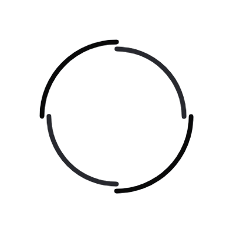

<app-notification></app-notification>
<app-login  *ngIf="!user"></app-login>
<app-layout *ngIf="user" ></app-layout>
<div class="loading-overlay" *ngIf="spinnerService.visibility | async">
    
 </div>